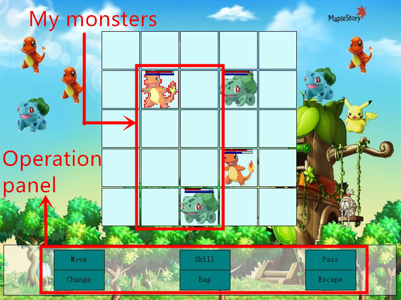
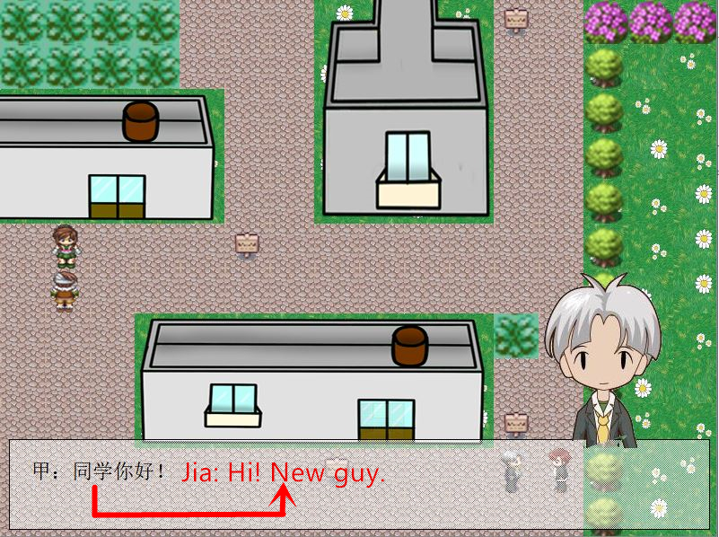
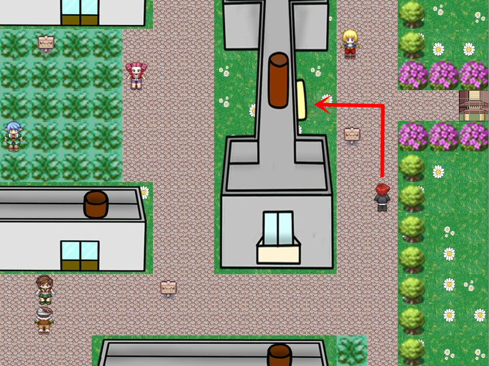
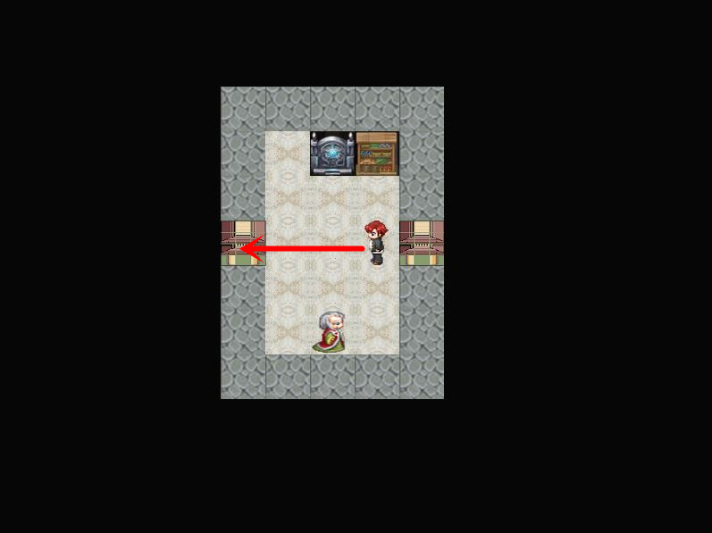
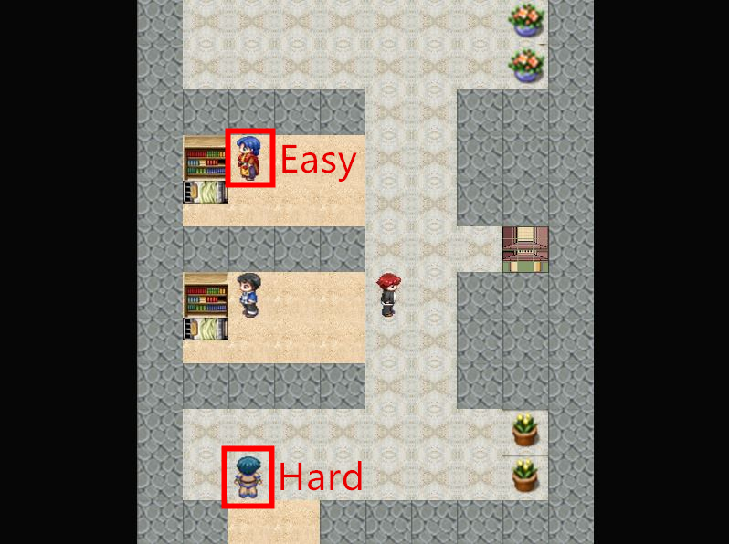

Course Projects
Self-Made RPG
This role-playing game (RPG) was a group project I conducted with my partner in my freshman year. Please click here to download, and as long as your computer has Visual Studio, clicking the "PKUmon.exe" file should start the game. It is basically a more strategic version of the famous Pokemon with the map of Peking University (PKU), and thus we named it PKUmon. Our game goes beyond Pokemon in that we design each battle as a two-versus-two 5*5-chessboard game. In this way, players are allowed to perform more possibilities, as the battle formation of the two in-field monsters and the distances between monsters are all important considerations.
I was mainly in charge of the programming part, that is the data structure and the AI algorithm. My partner developed the user interface. I revised the Genetic Algorithm (GA) to suit this game to make it faster while maintaining its excellent performance. With this algorithm, AI's monsters know how to judge the situation, as they are aggressive when taking the lead, while being evasive when feeling losing it. Also, both monsters tend to get close to each other.
For an example, I show a screenshot of battle below:
Additionally, players can interact with non-player characters (NPC) by first facing one of them and then clicking "space" on the keyboard. An example:
Nonetheless, we only had one semester to build this game, so the completeness is not high. But we still provide two battles in a secret room, and the following two figures show the way:
  Above, the difficulty of both battles is differentiated into "Easy" and "Hard", and although one can easily handle the former, the calculative AI designed by me makes the latter battle very tough. Now, enjoy this game!
Equilibrium Refinement
I came up with the notion of Robust Equilibrium when I was learning Fudenberg and Tirole's Game Theory, and I formalized it as a research proposal. Please click here to view this proposal and here to download the presentation PPT.
I thought it is important because it defines the refinement concept very differently from literature, like the seminal work by Selten (1975). Consider a two-player game, and the basic insight is that when one player's strategy is slightly perturbed and the other changes his strategy immediately to response to this perturbance, if the former player has the incentive to repress this perturbance given his opponent's new response, then this strategy of his is a robust anticipation of his opponent. And when everyone performs a robust anticipation in a nash equilibrium, this equilibrium is robust.
This notion tests an equilirium's robustness by directly perturbing players' strategy, instead of perturbing the game like in most of the literature of refinement, and clearly this method is also closely connected with true-life applications. Although I did not have the time for a general theorem, I gave an informal proof for the equilibrium existence in two-player cases. Another important result this notion gives is that it can be utilized to develop an algorithm that solves certain kinds of numerical games very fast. My result shows that, in any two-player finite-dimension game, the robust equilibria are right the Deleted Maximal Points (DMP) of a well defined function, and I propose to use a noisy gradient ascent algorithm to find these maxima. I have performed this idea practically, as I used Python to program it and it turned out to be both fast and accurate.
Behavioral Collective Action
The Growth of China
I finished this project in June 2019 for a course on economic development. It is a development report based on both factoral and sectoral GDP-decomposition method. Please click here to view the report and here for the coding. For a quick understanding of what this report is about, please click the "summary" below.
Summary. From both factoral and sectoral angles, this paper examines China’s economic growth since the Reform in 1978 in order to derive some growth patterns explaining the economic logic behind the great China Miracle. Our objective also lies in summarizing different views in literature of China’s growth and trying to mitigate some conflicts among the scholars, debates over the role of TFP and capital, the contribution of agriculture, etc.. Through out the paper, we examine the extent to which this paper is connected with and differentiated from previous studies.
For factoral analysis, we apply Zhu’s (2012) growth accounting approach at both aggregate and sectoral levels. We discover some change of role of the growth of two factors, TFP and capital, since although TFP’s contribution to total growth dominates during the entire history, it drops sharply from 77% to 57% after 2001 in company with the rise of capital growth whose explanatory power rise from less than 10% to 35%. We further show that this change during the early 2000s should be completely attributed to the factoral role interchange happening in non-agricultural sector, as TFP growth accounted for 75% of non-agricultural growth before 2001 while capital growth has explained half of it after 2001. However, the agricultural growth has been constantly driven by powerful TFP growth. Another phenomenon we disclose is that labor force has been escaping from agriculture to other industries implying an inter-sectoral structural transformation.
The labor migration pattern above makes sectoral analysis necessary. To illustrate the economic incentives driving the migration, we develop a useful notion, Model Price Ratio (MPR), defined as the theoretical wage of one sector to that of agricultural department deduced from standard Cobb-Douglas production function. The gap between the realized MPR and its theoretical value 1 demonstrates the deviation of reality from the theory that ideal labor market yields the same wages in different markets. Through three ways, we justify that this deviation is an adequate proxy for migration restriction. MPR has been obviously higher than 1 since the 1950s, and this confirms the existence of both demand and friction of China’s structural transformation. We also define the counterpart notion for capital, Model Price Ratio of Capital (MPRC), which stays close to 1 after 2001, but also has been steadily increasing since reform.
Finally, we draw some prospects on China’s future development. MPR’s rebound in 2016 shows that there will still be great demand for structural transformation, and that MPRC has increased sharply since 2013 implies that capital’s role will continue to rise. We make the policy suggestion that Chinese government should stick to serious reforms, and we list some examples.